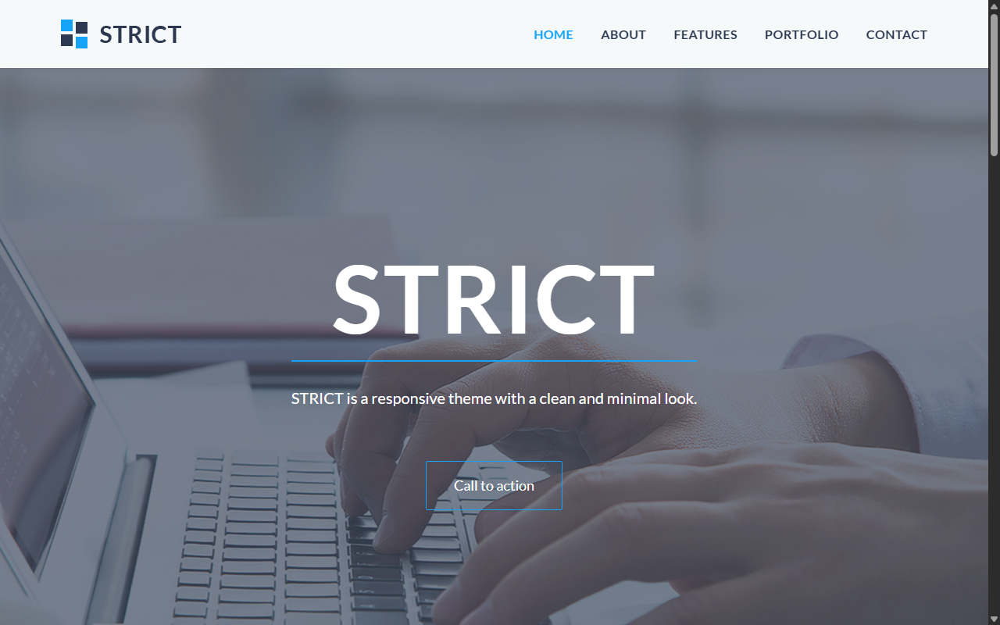

Modern Web Design • Clean & Minimal Architecture
STRICT — Minimalist Theme
A modern, ultra-clean responsive portfolio and multipurpose theme designed with pixel-perfect simplicity, optimized performance, and pure aesthetics across all viewports.
Concept
Engineered around the philosophy of pure, distraction-free design that lets creative content speak with maximum visual clarity.
Highlights
Responsive fluid layouts, crisp typography hierarchy, call-to-action sections, interactive showcase cards, and streamlined mobile navigation.